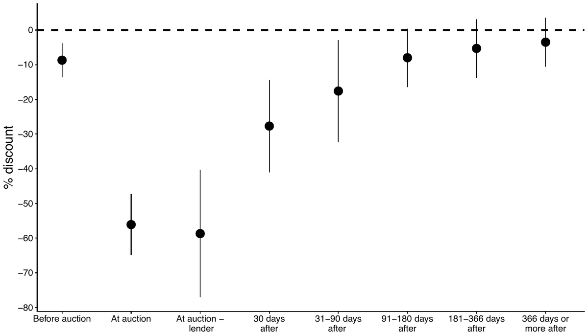

Home Foreclosure Discounts in Auctions Without Reserve Prices
Real Estate Economics, 2026
Download paper·Journal version
Abstract
This paper estimates foreclosure discounts in Cape Town, South Africa, where,
until 2019, foreclosure auctions occurred without reserve prices. Using newly constructed data
linking sheriff auction notices to the universe of property transactions, rich property
characteristics, and municipal service request records, I document large foreclosure discounts that
vary by empirical approach. In a cost-adjusted hedonic framework, properties sold at foreclosure
auction transact at a discount of 14.5 per cent relative to comparable non-foreclosed sales;
repeat-sales estimates yield substantially larger discounts of 30.2 per cent. These estimates
bracket the plausible range of the true discount: the hedonic provides a conservative lower bound
after netting out buyer-incurred transaction costs, while the repeat-sales provides an upper bound
that additionally captures time-varying deterioration not fully observed in cross-sectional data.
The magnitudes documented here are large relative to settings with reserve prices, reflecting an
institutional environment where the absence of a reserve price leaves auction outcomes effectively
unbounded on the downside. The implications are especially severe in South Africa’s recourse
mortgage system: foreclosed borrowers who lose their homes at auction may also remain liable for any
balance between the sale price and the outstanding mortgage, compounding the household-level costs
of foreclosure.
